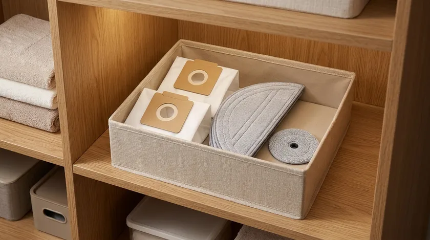

로보락 (Roborock)
비대칭 단차형 필터·황토색 더스트백 규격 맞추는 로보락 S9 MaxV Ultra 9종 세트 가이드
글·구성: 제이상점 · 기종별 1:1 호환 실물 점검 · 교체 주기 비교표 · 스마트스토어 패키지 안내

핵심 관리 · 선택 체크포인트
- 거실에 단모 러그를 깔아 두었거나 반려동물과 함께 생활하는 가정에서는 로봇청소기 브러시 틈새와 먼지통 필터에 털과 미세 각질이 평소보다
- 러그 경계면 주행 후 듀오디바이드 원추형 브러시와 미니 걸레 점검: S9 MaxV Ultra의 적·흑 2분할 원추형 브러시는 긴 털을 중앙 흡입구로 모아 엉킴을 줄여 주지만, 러그 위를 매일 주행한다면 주 1회 브러시 좌우 결합 축과 2발 곡선형 사이드브러시에 낀 잔털을 털어 주는 것이 좋습니다.
- 반려동물·러그 가정의 S9 MaxV Ultra 소모품 집중 점검표: 털과 미세먼지 유입량이 많은 환경일수록 필터 건조와 더스트백 통기성 관리가 흡입력 유지의 핵심입니다.
- 제이상점에서는 기간(1년·6개월·3개월)과 세제 옵션(기본 포함·정품세제 업그레이드·세제 미포함)을 조합한 9가지 필수 옵션을 제공하고 있습니다.
- 거실 러그 옆 트레이 점검과 세탁실 단차형 필터 교대 건조: 물세척한 단차형 필터는 습기가 남지 않도록 세탁실 통풍 매트에서 24시간 바짝 말리고, 그사이 리넨 박스에 보관해 둔 마른 예비 필터를 끼워 두면 배기구 냄새를 깔끔하게 예방할 수 있습니다.
실물 부품 디테일 · 관리 구성 이미지



부품 규격 · 점검 기준표
| 집중 관리 부품 | S9 MaxV Ultra 전용 특징 | 환절기·털 빠짐 시즌 관리 팁 |
|---|---|---|
| 듀오디바이드·2발 브러시 | 적·흑 원추형 2분할 브러시 + 곡선형 2발 사이드브러시 | 중앙 유도 간격 및 회전축 끝단 먼지 주 1회 제거 |
| 비대칭 단차형 헤파필터 | 계단식 꺾임 프레임의 2칸 주름 필터 | 솔로 털 먼지를 먼저 털어낸 뒤 물세척·24시간 교대 건조 |
| 황토색 칼라 더스트백·걸레 | 베이지 카드 칼라 봉투 + 반원형 메인/원형 미니 걸레 | 봉투가 70~80% 찼을 때 조기 교체해 흡입 풍량 유지 |
💡 교체 주기가 겹치는 필터·브러시·물걸레·더스트백은 단품 배송비를 여러 번 내기보다 로보락 S9 MaxV Ultra 기간별 세트(3개월·6개월·1년)로 미리 구비해 두면 물세척 후 24시간 교대 건조까지 끊김 없이 관리할 수 있습니다.
자주 묻는 질문 (FAQ)
Q. 로보락S9MaxVUltra의 듀오디바이드·2발 브러시 규격과 관리 기준은 무엇인가요?
A. 적·흑 원추형 2분할 브러시 + 곡선형 2발 사이드브러시 규격을 사용하며, 중앙 유도 간격 및 회전축 끝단 먼지 주 1회 제거 기준으로 점검·교체하면 청소 효율을 안정적으로 유지할 수 있습니다.
Q. 로보락S9MaxVUltra의 비대칭 단차형 헤파필터 규격과 관리 기준은 무엇인가요?
A. 계단식 꺾임 프레임의 2칸 주름 필터 규격을 사용하며, 솔로 털 먼지를 먼저 털어낸 뒤 물세척·24시간 교대 건조 기준으로 점검·교체하면 청소 효율을 안정적으로 유지할 수 있습니다.
Q. 로보락S9MaxVUltra의 황토색 칼라 더스트백·걸레 규격과 관리 기준은 무엇인가요?
A. 베이지 카드 칼라 봉투 + 반원형 메인/원형 미니 걸레 규격을 사용하며, 봉투가 70~80% 찼을 때 조기 교체해 흡입 풍량 유지 기준으로 점검·교체하면 청소 효율을 안정적으로 유지할 수 있습니다.
제이상점 1:1 검수 추천 패키지 · 구매 안내
메인 추천 구성
대표 구성 참고가 69,500원대 (옵션·쿠폰별 스마트스토어 결제 화면 기준)
1년세트1년세트｜호환세제→정품세제 업그레이드6개월세트6개월세트｜호환세제→정품세제 업그레이드3개월세트
![[정품] 로보락 세제 전용 세정제 세정액 클리너 소모품 S10 S9 S8](../../assets/img/roborock-cleaner-product-eec13fec.webp)
함께 많이 찾는 보충 구성
용량 1L-1병용량 1L-2병(복수구매할인)
☑️ 주문 전 확인해 두면 좋은 제이상점 안심 포인트
· 기종별 1:1 전용 규격 검수: 모델명·연식에 맞는 호환·정품 구성을 검수해 오주문 불안을 줄였습니다.
· 해외직배송 미리 주문 팁: 중국 구매대행·해외직배송 상품이므로 마지막 여분 1개를 꺼내 쓰는 시점에 개인통관고유부호와 함께 여유 있게 주문해 두시면 훨씬 경제적인 비용으로 끊김 없이 교체하실 수 있습니다.
· 기종별 1:1 전용 규격 검수: 모델명·연식에 맞는 호환·정품 구성을 검수해 오주문 불안을 줄였습니다.
· 해외직배송 미리 주문 팁: 중국 구매대행·해외직배송 상품이므로 마지막 여분 1개를 꺼내 쓰는 시점에 개인통관고유부호와 함께 여유 있게 주문해 두시면 훨씬 경제적인 비용으로 끊김 없이 교체하실 수 있습니다.
📖 더 많은 가정 내 사용 스토리와 상세 후기가 궁금하시다면
📱 네이버 블로그 모바일 원문 보기 ↗